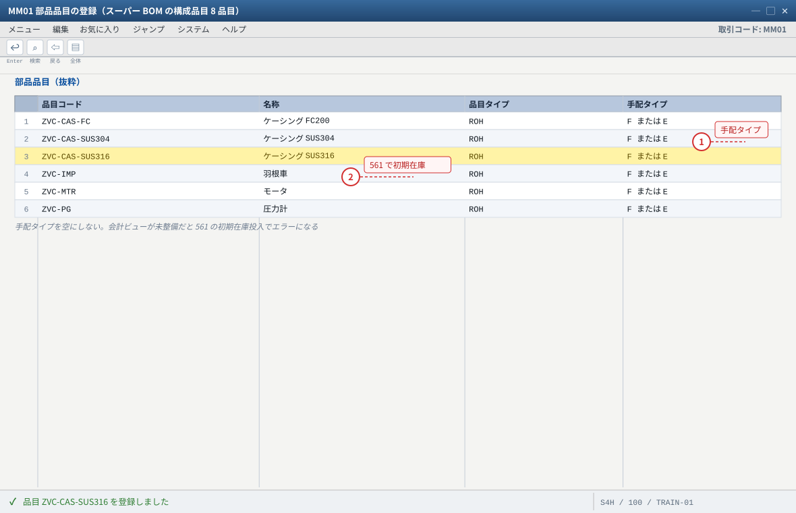
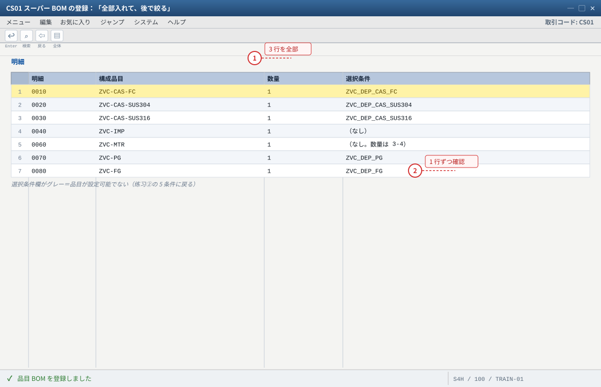
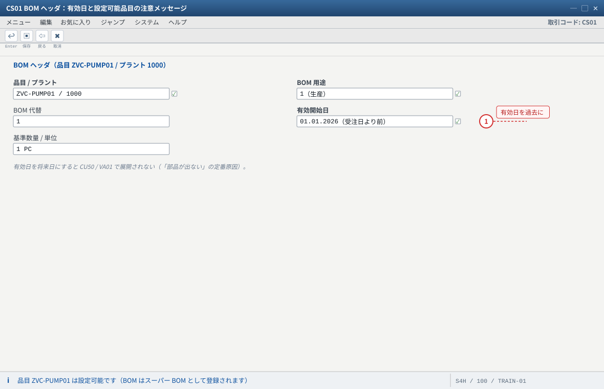
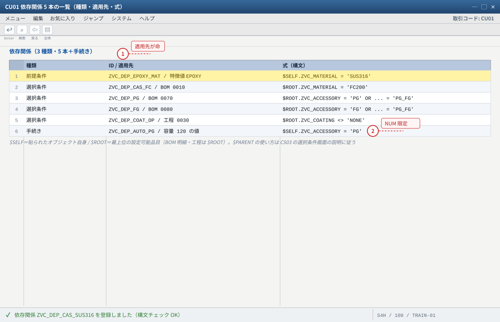
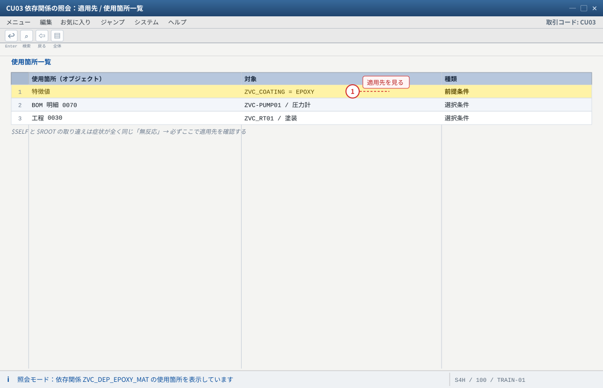
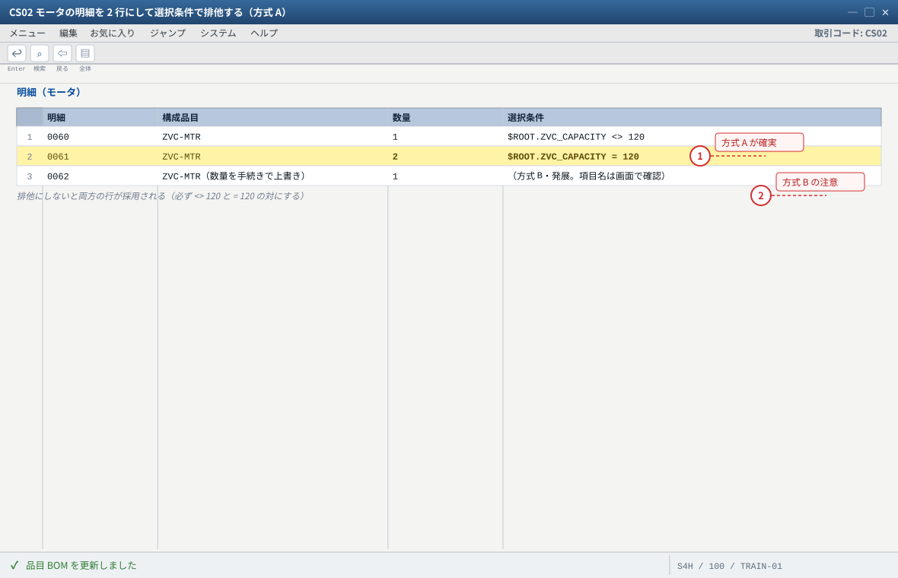
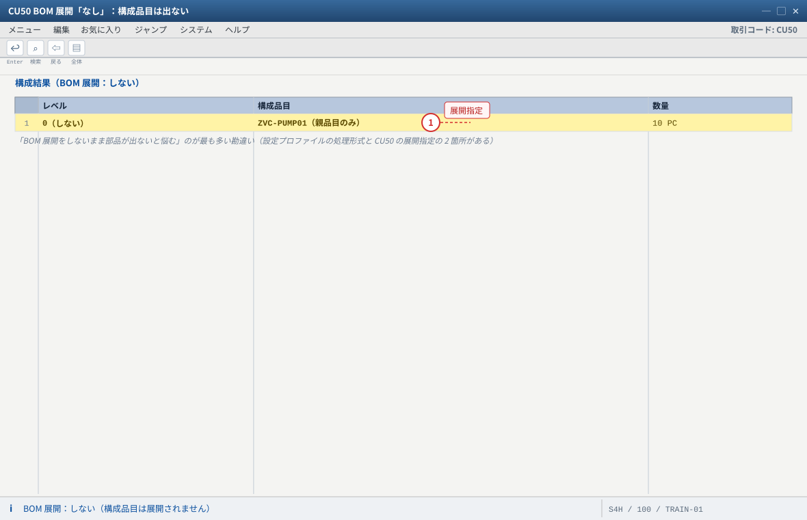
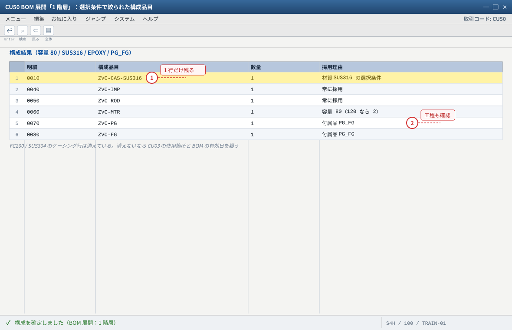

练习③ 依存関係とスーパー BOM（VC の「動き」を作る）
.png 放进 assets/gui/ 后执行 python3 tools/swap_gui_images.py <site> --apply 即可一键替换。CS01 でスーパー BOM（全バリエーション分の構成品目）を登録、
③ CU01 で前提条件・選択条件・手続きを作って BOM 明細と工程に貼り、④ CA01 で作業手順（3 工程）に選択条件を貼り、
⑤ CU50 で設定値によって BOM と工程が変わることを目で見る、までです。预计 70 分钟。本练习之后系统里的状态是：
SUS316 を選ぶと材質別ケーシングが 1 行だけ残り、付属品 NONE なら圧力計・流量計が消え、塗装 NONE なら塗装工程が消える。VC の「おおっ」はここで初めて出ます。MM01 ×7
スーパー BOM
選択条件を貼る
工程の選択条件
前提条件・手続き
展開の切替を確認
3-1 部品品目の準備（MM01）
入力值（すべてプラント 1000、単位 PC、手配タイプは自分の都合で可）
| 品目コード | 名称 | 品目タイプ | 備考 |
|---|---|---|---|
ZVC-CAS-FC | ケーシング FC200 | ROH（または HALB） | 材質別 3 種のうち 1 つ目 |
ZVC-CAS-SUS304 | ケーシング SUS304 | ROH | — |
ZVC-CAS-SUS316 | ケーシング SUS316 | ROH | 価格差が最も大きい想定 |
ZVC-IMP | 羽根車 | ROH | 全構成で使用 |
ZVC-ROD | 軸 | ROH | 全構成で使用 |
ZVC-MTR | モータ | ROH | 容量 120 で数量が変わる題材（C7） |
ZVC-PG / ZVC-FG | 圧力計 / 流量計 | ROH | 付属品（選択条件の主役） |
MM01で上表 8 品目を作成（ビューは 基本データ1・2／購買／MRP1〜4／会計1／プラント在庫／保管場所 程度で可）。- MRP1 は
PD／ロットサイズEX、手配タイプは外部調達F（購買）または内製Eのどちらでも可。手配タイプを空にしない。 - 練習中の在庫不足で詰まらないよう、初期在庫を入れておく：
MIGO（またはMB1C）→ 移動タイプ561→ 各品目 100 PC・保管場所（例0001）。 MMBEで 8 品目の自由在庫を確認。

- 1 手配タイプを空にすると計画手配・所要量が出ない
- 2 初期在庫 100 PC を 561 で入れておくと練習④の入出庫で詰まらない
自システムでの確認：MM03 で各品目の基本データと MRP1（手配タイプが空でないこと）、MMBE で自由在庫。MIGO の 561 で初期在庫 100 PC・保管場所 0001。
3-2 スーパー BOM の登録（CS01）— 「全部入れて、後で絞る」
入力值
| 明細 | 構成品目 | 数量 | 選択条件（依存関係 ID） |
|---|---|---|---|
| 0010 | ZVC-CAS-FC（ケーシング FC200） | 1 | ZVC_DEP_CAS_FC → $ROOT.ZVC_MATERIAL = 'FC200' |
| 0020 | ZVC-CAS-SUS304 | 1 | ZVC_DEP_CAS_SUS304 → $ROOT.ZVC_MATERIAL = 'SUS304' |
| 0030 | ZVC-CAS-SUS316 | 1 | ZVC_DEP_CAS_SUS316 → $ROOT.ZVC_MATERIAL = 'SUS316' |
| 0040 | ZVC-IMP（羽根車） | 1 | （なし＝常に採用） |
| 0050 | ZVC-ROD（軸） | 1 | （なし） |
| 0060 | ZVC-MTR（モータ） | 1 | （なし。数量だけ容量で変える → 3-4） |
| 0070 | ZVC-PG（圧力計） | 1 | ZVC_DEP_PG → $ROOT.ZVC_ACCESSORY = 'PG' OR $ROOT.ZVC_ACCESSORY = 'PG_FG' |
| 0080 | ZVC-FG（流量計） | 1 | ZVC_DEP_FG → $ROOT.ZVC_ACCESSORY = 'FG' OR $ROOT.ZVC_ACCESSORY = 'PG_FG' |
CS01→ 品目ZVC-PUMP01→ プラント1000→ BOM 用途1（生産）→ 有効開始日を受注日より前に設定（例：当年 1/1）。- 上表 8 行を入力（数量・単位
PC）。3 行のケーシングを「全部入れる」のが正しい姿（ここで削ってはいけません）。 - 各ケーシング行と付属品行の「選択条件」欄に依存関係 ID を入力（無ければその場で
CU01を起動して作成 → 3-3）。 - 保存 →
CS03で明細と選択条件を確認（選択条件が入っているかを行ごとに目視）。
CS03：明細 8 行、うち 5 行に選択条件が入っている。② CS01 のヘッダで「品目 ZVC-PUMP01 は設定可能」の注意メッセージが出ることがある（正常）。CU50/VA01 で展開されない（「部品が出ない」の定番原因）。
- 1 ケーシング 3 行を「全部入れる」のが正しい姿（ここで削ってはいけない）
- 2 選択条件は行ごとに入力。構文エラーは保存時に検出される（綴り・引用符を疑う）
自システムでの確認：CS03 の明細と選択条件を 1 行ずつ目視。有効開始日が受注日より前であること（例 当年 1/1）。

- 1 有効日は受注日より前に。ここが原因の「部品が出ない」が最も多い
自システムでの確認：CS03 のヘッダ有効日と明細数。「品目は設定可能」の注意メッセージが出ることがある（正常）。
3-3 依存関係の作成（CU01〜CU03）
依存関係は「式（構文）」＋「適用先（貼る場所）」のセットです。3 種類を順に作り、全部 CU50 で動作確認します。
| # | 種類 | ID | 適用先 | 式（本站の値） |
|---|---|---|---|---|
| 1 | 前提条件 | ZVC_DEP_EPOXY_MAT | 特徴値 ZVC_COATING = EPOXY | $SELF.ZVC_MATERIAL = 'SUS316' |
| 2 | 選択条件 | ZVC_DEP_CAS_FC / _SUS304 / _SUS316 | BOM 明細 0010 / 0020 / 0030 | $ROOT.ZVC_MATERIAL = 'FC200' ほか |
| 3 | 選択条件 | ZVC_DEP_PG / ZVC_DEP_FG | BOM 明細 0070 / 0080 | $ROOT.ZVC_ACCESSORY = 'PG' OR ... = 'PG_FG' |
| 4 | 選択条件 | ZVC_DEP_COAT_OP | 作業手順の工程 0030（塗装） | $ROOT.ZVC_COATING <> 'NONE' |
| 5 | 手続き | ZVC_DEP_AUTO_PG | 特徴値（容量 120 側） | $SELF.ZVC_ACCESSORY = 'PG'（自動セットの練習） |
- 前提条件：
CT04→ZVC_COATINGを変更 → 許可値EPOXYの行 → 依存関係欄からCU01を起動 → IDZVC_DEP_EPOXY_MAT／種類「前提条件」→ 式を入力 → 構文チェック → 保存。 - 選択条件（ケーシング）：
CS02→ 明細 0010 → 「選択条件」欄 →CU01起動 → IDZVC_DEP_CAS_FC／種類「選択条件」→$ROOT.ZVC_MATERIAL = 'FC200'→ 保存。0020・0030 も同様（ID は行ごとに別にする）。 - 選択条件（付属品）：0070 に
ZVC_DEP_PG、0080 にZVC_DEP_FG。PG_FGを選んだときに両方出るようORで書く。 - 選択条件（工程）：
CA02→ 工程 0030 → 「選択条件」欄 →ZVC_DEP_COAT_OP（$ROOT.ZVC_COATING <> 'NONE'）。 - 手続き：
CU01でZVC_DEP_AUTO_PGを作成（種類「手続き」）→ 容量120の値に割当 →$SELF.ZVC_ACCESSORY = 'PG'。手続きの実行順と副作用を体感するのが目的（業務で使うかは別途判断）。 CU03で 5 つの依存関係を照会し、「適用先」／「使用箇所一覧」で貼り付け先が意図どおりかを確認する。
構文のポイント（本站で使う最小限）
$SELF この依存関係が貼られているオブジェクト自身（特徴値に貼る前提条件はこれ）
$ROOT 最上位の設定可能品目（BOM 明細・工程の選択条件はこれを参照するのが基本）
$PARENT 階層の親（varconf の解説では選択条件を $parent.<特徴> = <値> の形で説明。
どちらを使うかは BOM 階層とリリースで変わる → CS03 の選択条件画面で確認）
比較演算子 = <> > < >= <= 数値特徴（NUM）でないと大小比較は使えない
OR / AND OR は「どちらかを満たせば採用」。付属品の PG_FG はこの形で書く
CU03 の「使用箇所一覧」に、BOM 明細と工程が表示される（ここに出ない依存関係は絶対に発火しない）。
② CU50 で前提条件・選択条件が期待どおりに働く（→ 3-5）。ZVC_COATING 全体）に貼ってしまう → 塗装という特徴そのものが使えなくなる（「選べない」症状の質が違う）。特徴値に貼るのが正解。
② 選択条件を構成品目の品目マスタ側に書こうとする → BOM 明細に貼るのが正解。
③ 複数値特徴の判定：PG と FG を同時に選んだ場合、= 'PG' が成立しないことがある → PG_FG を選ぶか、条件を丁寧に書く。本站は両方を使うので差を体感できます。
④ $ROOT と $SELF の取り違えで「無反応」→ 症状が全く同じなので、必ず CU03 の使用箇所で適用先を確認する。120 以上でのみ流量計を選べる」前提条件を追加せよ（構文：$SELF.ZVC_CAPACITY >= 120。数値特徴でないと書けないことに注意）。
- 1 前提条件は特徴値に、選択条件は BOM 明細／工程に貼る（適用先を間違えると無反応）
- 2 比較演算子の大小（>=）は数値特徴（NUM）でないと使えない
自システムでの確認：CU03 の「適用先 / 使用箇所一覧」に 5 本すべての貼り付け先が出るか（ここに出ない依存関係は絶対に発火しない）。

- 1 適用先が見える＝発火する。無反応の第一チェックはこの画面
自システムでの確認：CU03 の使用箇所一覧に BOM 明細と工程が出るか。出ない場合は適用先の指定違いを疑う。
3-4 数量を設定値で変える（容量 120 → モータ 2 台）
手続きで数量を直接書き換える方式は環境差が出やすいため、本站は確実な方式を先に作り、その後で手続き方式を試します。
| 方式 | 作り方 | トレードオフ |
|---|---|---|
| A. 行を分けて選択条件（推奨・確実） | モータの明細を 2 行にする（数量 1 の行＝ZVC_CAPACITY <> 120／数量 2 の行＝ZVC_CAPACITY = 120） | 見た目は増えるが挙動が読みやすく、故障切り分けが楽 |
| B. 手続きで数量を書き換え | BOM 明細に手続きを貼り、容量 120 のとき数量項目を 2 にする | 明細は 1 行で済むが、項目名・実行順・再展開の挙動に依存し、後から読む人が理解しづらい |
- 方式 A：
CS02でモータ行をコピーし 2 行目を作成。数量2／選択条件$ROOT.ZVC_CAPACITY = 120。元の行に選択条件$ROOT.ZVC_CAPACITY <> 120を追加。 - 方式 B（発展・任意）：
CA03／CS03の画面で数量項目名を確認し、手続きで書き換える式を作る（項目名は自システムの画面で確認してから書く）。 CU50で容量80と120を切り替え、モータの数量が 1／2 になることを確認。
<> 120 と = 120）にする。
- 1 見た目は増えるが挙動が読みやすく故障切り分けが楽（推奨）
- 2 手続き方式は実行順・項目名・再展開に依存する（後から読む人が理解しづらい）
自システムでの確認：CS03 で 2 行と選択条件を確認 → CU50 で容量 80 と 120 を切り替えて数量が 1／2 になるか。方式 B は項目名を CA03 / CS03 の画面で確認してから。
3-5 CU50 で BOM 展開の切替を確認する（本练习のクライマックス）
CU50 は「設計の単体テスト」です。BOM 展開のレベルを切り替えて、設定値が構成品目と工程をどう変えるかを確認します。
CU50→ZVC-PUMP01→ 容量80/ 材質SUS316/ 塗装EPOXY/ 付属品PG_FGで構成。- 「BOM 展開」をしないで構成結果を確認 → 構成品目は出ない（親品目だけ）。
- 「1 階層展開」に切り替えて再表示 → ケーシング
SUS316・羽根車・軸・モータ・圧力計・流量計が出る（FC200/SUS304のケーシング行は消えている）。 - 材質を
FC200に変更 → ケーシングがZVC-CAS-FCに入れ替わることを確認。 - 付属品を
NONEに変更 → 圧力計・流量計が消える。付属品をPGのみに変更 → 圧力計だけが残る。 - 塗装を
NONEに変更 → 「工程」ビューで工程 0030 が消える（EPOXYに戻すと復活）。 - 容量
120に変更 → モータ数量が 2 になる（3-4 の方式による）。手続きZVC_DEP_AUTO_PGを入れた場合は付属品がPGに自動セットされる副作用も確認。 SUS316以外（FC200）で塗装EPOXYを選ぼうとすると前提条件で止まることを確認。
CU03 の使用箇所と有効日を疑う）。
③ 工程 0030 の取捨。「BOM は変わるのに工程が変わらない」は作業手順への貼り忘れの典型です。CU50 の展開指定の 2 箇所がある）。
② 展開結果が古い → 設定を変えたら再構成（再展開）を行う。
③ 「設定値を変えても反応しない」→ CU03 で適用先、特徴の技術名称、$SELF/$ROOT の順に疑う。CU50 の結果をスクリーンショットか手書きで記録し、4 通りの構成（SUS316+EPOXY+PG_FG / FC200+NONE+NONE / SUS304+URETHANE+PG / SUS316+EPOXY+NONE）の構成品目とエンジニアリングを一覧表にせよ。→ 学员版 シート C に記入。
- 1 親品目だけが出る＝正常。「部品が出ない」の原因は展開指定（CU50）と処理形式（CU43）の 2 箇所
自システムでの確認：CU50 の BOM 展開を しない / 1 階層 / 多階層 で切り替えて結果を比較（SAP Help の「BOM 展開レベル」の説明と一致するか）。

- 1 材質別 3 行のうち 1 行だけが残る＝選択条件が効いている証拠
- 2 「BOM は変わるのに工程が変わらない」は作業手順への貼り忘れの典型（CA03 を確認）
自システムでの確認：材質を FC200 に変えてケーシングが入れ替わるか、付属品 NONE で圧力計・流量計が消えるか、塗装 NONE で工程 0030 が消えるか。
3-6 本练习的期待结果汇总
| # | 成果物 | 期待值 | 証跡 |
|---|---|---|---|
| 1 | 部品品目 | 8 品目（ケーシング 3・羽根車・軸・モータ・圧力計・流量計）＋初期在庫 100 | MM03／MMBE |
| 2 | スーパー BOM | 明細 8 行・有効日が受注日より前・5 行に選択条件 | CS03 |
| 3 | 依存関係 | 前提条件 1／選択条件 5／手続き 1 が正しい適用先に貼られている | CU03 の使用箇所一覧 |
| 4 | 作業手順 | 工程 0010/0020/0030、0030 に選択条件 | CA03 |
| 5 | 切替の確認 | CU50 で 展開なし／1 階層 の差、材質・付属品・塗装による取捨 | CU50 の記録（シート C） |
3-7 つまずきと対処（まとめ）
| 症状 | 原因の第一嫌疑 | 确认手顺 |
|---|---|---|
| 部品が一切出ない | BOM 展開をしていない／BOM の有効日／プロファイルの処理形式 | CU50 で展開指定 → CS03 有効日 → CU43 処理形式 |
| 材質を変えてもケーシングが変わらない | 選択条件の適用先／$ROOT と特徴名の綴り | CU03 使用箇所 → CS03 の選択条件文字列 |
付属品を PG_FG にしても片方しか出ない | OR の書き漏れ／複数値特徴の判定 | 選択条件の式を読み直す（OR の有無） |
塗装 NONE でも工程 0030 が出る | 工程側への選択条件の貼り忘れ | CA03 工程 0030 の選択条件欄 |
| 前提条件を入れても止まらない | 特徴（全体）に貼って値に貼っていない／逆 | CU03 の適用先を目で確認 |
| 手続きの結果が期待と違う | 実行順・項目名・再展開タイミング | CU50 で再構成 → 値の確定順を観察 |
3-8 验收（完成基准）
- 部品 8 品目が作成され、
MMBEで在庫（または在庫ゼロでも状態）を確認した CS01のスーパー BOM に 8 明細（ケーシング 3 行を含む）があり、有効日が受注日より前- 前提条件
ZVC_DEP_EPOXY_MATが特徴値EPOXYに貼られ、CU50でFC200＋EPOXYが成立しない - 選択条件が BOM 明細（ケーシング 3・圧力計・流量計）に貼られ、
CU50で取捨が変わる - 工程 0030 に選択条件が貼られ、塗装
NONEで消える - 容量
120でモータ数量が 2 になる（方式 A または B のどちらかで、方式の違いを説明できる） CU50で BOM 展開の切替（しない／1 階層）の差を自分の目で確認したCU03の「使用箇所一覧」を見せて、各依存関係の適用先を説明できる- 4 通りの構成の BOM 展開結果を シート C に記録した